정보처리산업기사 (2018-04-28 기출문제)
1과목: 데이터 베이스
1. 데이터베이스 언어 중 데이터의 보안, 무결성, 데이터 복구와 관계되는 것은?
- 데이터 정의 언어
- 데이터 조작 언어
- 데이터 제어 언어
- 데이터 종속 언어
(정답률: 70%)

2. 다음 자료에 대하여 버블 정렬을 사용하여 오름차순으로 정렬하고자 할 경우 1회전 후의 결과로 옳은 것은?
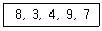
- 3, 8, 4, 9, 7
- 3, 4, 9, 7, 8
- 7, 9, 4, 3, 8
- 3, 4, 8, 7, 9
(정답률: 64%)
3. 다음 설명에 해당하는 것은?
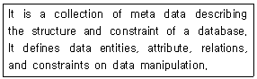
- DBMS
- Schema
- Key
- Data Ware House
(정답률: 79%)
4. ABC 순서로 입력 시 스택을 이용해 만들 수 없는 문자열은?
- BAC
- CAB
- BCA
- CBA
(정답률: 73%)
5. 다음 설명이 의미하는 것은?
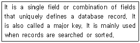
- Foreign Key
- Alternative Key
- Primary Key
- Reference Key
(정답률: 80%)
6. 순수 관계 연산자 중 Project 연산의 연산자 기호는?
- σ
- ∏(π)
- ÷
- ∪
(정답률: 67%)
7. 하나 또는 둘 이상의 기본 테이블로부터 유도되어 만들어지는 가상 테이블은?
- 뷰
- 시스템 카탈로그
- 스키마
- 데이터 디렉토리
(정답률: 84%)
8. 데이터베이스 설계 과정 중 개념적 설계 단계에 대한 설명으로 옳지 않은 것은?
- 산출물로 개체 관계도(ER-D)가 만들어진다.
- DBMS에 독립적인 개념 스키마를 설계한다.
- 트랜잭션 인터페이스를 설계한다.
- 논리적 설계 단계의 전 단계에서 수행된다.
(정답률: 66%)
9. 선형구조에 해당하지 않는 것은?
- 그래프(Graph)
- 큐(Queue)
- 스택(Stack)
- 배열(Array)
(정답률: 84%)
10. 릴레이션에 대한 특성으로 틀린 것은?
- 한 릴레이션에 포함된 튜플 사이에는 순서가 없다.
- 한 릴레이션을 구성하는 애트리뷰트 사이에는 순서가 없다.
- 모든 애트리뷰트 값은 원자값이다.
- 한 릴레이션에 포함된 튜플들은 모두 동일하다.
(정답률: 70%)
11. SQL의 데이터 정의문(DDL)에 속하지 않는 것은?
- CREATE
- DROP
- ALTER
- INSERT
(정답률: 76%)
12. 관계 데이터 연산인 관계 대수 및 관계 해석에 대한 설명으로 틀린 것은?
- 관계 데이터 모델에 대한 연산의 표현 방법으로 관계 대수와 관계 해석은 모두 절차적인 특성을 갖는다.
- 관계 대수는 릴레이션 조작을 위한 연산의 집합으로 피연산자와 결과가 모두 릴레이션이라는 특성을 가지고 있다.
- 관계 해석은 원래 수학의 프레디킷 해석(predicate calculus)에 기반을 두고 있다.
- 관계 대수의 일반 집합 연산에는 합집합, 교집합, 차집합 등이 있다.
(정답률: 77%)
13. 시스템 카탈로그에 대한 설명으로 틀린 것은?
- 시스템 자신이 필요로 하는 스키마 및 여러 가지 객체에 관한 정보를 포함하고 있는 시스템 데이터베이스이다.
- 시스템 카탈로그에 저장되는 내용을 메타데이터라고 한다.
- 데이터 사전이라고도 한다.
- 일반 사용자는 시스템 테이블의 내용을 검색할 수 없다.
(정답률: 86%)
14. 다음 트리를 전위 순서(Pre-order)로 운행한 결과는?
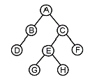
- A B C D E F G H
- D B G H E F C A
- A B D C E G H F
- B D G H E F A C
(정답률: 76%)
15. 정규화를 거치지 않으면 릴레이션 조작 시 데이터 중복에 따른 예기치 못한 곤란한 현상이 발생할 수 있다. 이러한 이상(Anomaly) 현상의 종류에 해당하지 않는 것은?
- 삭제 이상
- 삽입 이상
- 갱신 이상
- 조회 이상
(정답률: 67%)
16. 다음 SQL 문에서 DISTINCT의 의미는?
- 검색결과에서 레코드의 중복 제거
- 모든 레코드 검색
- 검색결과를 순서대로 정렬
- DEPT 의 처음 레코드만 검색
(정답률: 85%)
17. 스키마의 3계층에서 실제 데이터베이스가 기억장치 내에 저장되어 있으므로 저장 스키마(storage schema)라고도 하는 것은?
- 개념 스키마
- 외부 스키마
- 내부 스키마
- 관계 스키마
(정답률: 75%)
18. 아래의 그림에서 속성(Attribute)의 개수는?
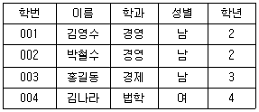
- 2
- 3
- 4
- 5
(정답률: 81%)
19. 색인 순차 파일에 대한 설명으로 옳지 않은 것은?
- 레코드를 추가 및 삽입하는 경우 파일 전체를 복사할 필요가 없다.
- 순차 처리와 랜덤처리가 가능하다.
- 레코드의 삽입, 삭제, 갱신이 용이하다.
- 인덱스를 저장하기 위한 공간과 오버플로우 처리를 위한 별도의 공간이 필요 없다.
(정답률: 56%)
20. 후위 표기(postfix)식이 다음과 같을 때 식의 계산 결과는?
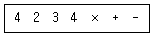
- 6
- 7
- 14
- -10
(정답률: 59%)
2과목: 전자 계산기 구조
21. 다음 중 논리 마이크로 동작을 표현한 것은? (단, R1, R2 는 레지스터를 의미한다.)
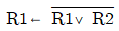
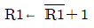
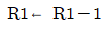
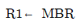
(정답률: 56%)
22. 고정 소수점 방식으로 가산이나 감산을 하려고 할 때 가장 처음 수행되는 것은? (단, 큰 수는 A, 작은 수는 B라 가정한다.)
- A * B를 수행한다.
- A – B를 수행한다.
- B – A를 수행한다.
- 두 수의 부호를 판단한다.
(정답률: 70%)
23. 다음 논리회로에서 단자 A에 0000, 단자 B에 0101 이 입력된다고 할 때 그 출력은?
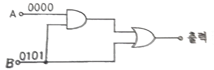
- 1111
- 0110
- 1001
- 0101
(정답률: 74%)
24. 주기억장치에서 인출된 명령어가 저장되는 레지스터는?
- Program Counter
- Instruction Register
- General Register
- Status Register
(정답률: 55%)
25. 컴퓨터의 연산에 대한 설명 중 가장 옳지 않은 것은?
- 한 번에 3개 이상의 데이터를 단일 연산기로 동시에 처리할 수 있다.
- 연산에 사용되는 데이터의 수가 한 개뿐인 것을 단항(unary) 연산이라 한다.
- 중앙처리장치(CPU)에서 연산에 사용될 데이터를 기억시켜 두는 장소를 레지스터라 한다.
- 이동(move)과 회전(rotate)은 비수치적 연산에 속한다.
(정답률: 65%)
26. 명령어의 연산코드(operation code)의 기능과 관계없는 것은?
- 입출력 기능
- 제어 기능
- 논리연산 기능
- 주소지정 기능
(정답률: 50%)
27. 캐시 메모리 시스템에서 주기억장치에 있는 블록을 캐시의 슬롯에 대응시키는 방법이 아닌 것은?
- segment mapping
- direct mapping
- associative mapping
- set-associative mapping
(정답률: 47%)
28. 연산 장치의 주 기능이 아닌 것은?
- 논리연산
- 산술연산
- 시프트(Shift)연산
- 전체 프로그램 저장
(정답률: 77%)
29. 주변장치와 기억장치 사이에서 중앙처리장치의 지시를 받아 정보를 이송하는 기능을 가진 것은?
- 기록장치
- 채널
- 연산장치
- 보조기억장치
(정답률: 76%)
30. 프로그램을 실행하는 도중 갑작스런 정전으로 발생하는 인터럽트는?
- 입ㆍ출력 인터럽트
- 프로그램 인터럽트
- 제어 프로그램 호출 인터럽트
- 기계 오류 인터럽트
(정답률: 76%)
31. 십진수 –1을 2의 보수로 표현하면?
- 0000 0001
- 1000 0001
- 1000 0010
- 1111 1111
(정답률: 56%)
32. 인터럽트가 발생 되는 원인으로 가장 옳지 않은 것은?
- 정전이나 기계적인 문제 발생
- SVC(Supervisor Call) 명령 수행
- 불법적인 명령 수행
- 부프로그램 호출
(정답률: 63%)
33. 일반적인 x86계열 CPU를 이용하는 퍼스널컴퓨터(PC)에서 사용하는 보조기억장치에 해당되지 않는 것은?
- DDR RAM
- Flash Memory
- Hard Disk
- SSD
(정답률: 50%)
34. 다음 중 인터럽트가 사용되는 것은?
- CPU의 동작상태
- 메모리 용량 체크
- CPU와 I/O 간의 정보전달
- CPU의 속도 개선
(정답률: 57%)
35. 컴퓨터에서 사용되는 보조기억장치의 특징이 아닌 것은?
- 대용량 기억장치이다.
- 주기억장치보다 액세스 속도가 빠르다.
- 대형 프로그램을 기억시킬 수 있다.
- 주기억장치보다 비트당 가격이 싸다.
(정답률: 67%)
36. 다음 중 범용 레지스터를 사용하여 기억할 수 없는 것은?
- 연산할 데이터
- 연산된 결과
- 실행될 명령어
- 주기억장치에서 보내온 데이터
(정답률: 47%)
37. 마이크로 오퍼레이션(micro operation)에 관한 설명 중 옳지 않은 것은?
- 명령(instruction) 수행은 일련의 마이크로 오퍼레이션 수행으로 이루어진다.
- 가장 기본단위의 프로그램 수행으로 원자(atomic) 연산이라고도 한다.
- 마이크로 오퍼레이션 수행은 중앙처리장치를 순서 논리회로로 볼 때 일종의 상태 변환이다.
- 컴퓨터의 구조가 변하여도 마이크로 오퍼레이션의 종류는 일정하다.
(정답률: 68%)
38. 그림은 어떤 데이터 형식을 나타낸 것인가?
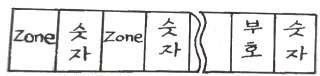
- Unpack 형 10진수
- 고정데이터 10진수
- Pack 형 10진수
- 가변논리 데이터
(정답률: 58%)
39. DMA제어기가 한 번에 한 데이터 워드를 전송하고 버스의 제어를 CPU에게 반환하는 방법은?
- DMA 대량 전송
- 데이지체인
- 핸드셰이킹
- 사이클 스틸링
(정답률: 44%)
40. Fetch cycle에서 수행하는 기능에 대한 설명으로 가장 옳지 않은 것은?
- 지정된 산술ㆍ논리 연산이 수행된다.
- PC의 내용을 MAR로 전송한다.
- MAR이 지정하는 명령어를 MBR로 옮긴다.
- MBR에 있는 명령어 코드를 IR로 옮긴다.
(정답률: 51%)
3과목: 시스템분석설계
41. 시스템에서 한번 고장이 발생하여 다음 고장이 발생할 때까지의 평균시간을 나타내는 것은?
- COUNT
- CTTF
- MTBF
- MTTR
(정답률: 55%)
42. 시스템 개발의 각 단계(분석, 설계, 구현, 테스트 등)에서 이루어지는 문서화의 장점으로 가장 거리가 먼 것은?
- 새로운 담당자가 기존 작업에 대한 내용을 쉽게 파악할 수 있다.
- 시스템 사용 도중에 변경이나 유지보수가 용이하다.
- 시스템 개발 관계자와의 의사소통이 원활하게 이루어질 수 있다.
- 표준 개발 아키텍처 또는 개발 방법이 없어도 문서화를 통해 쉽게 시스템 간 호환성을 갖춘 대규모 시스템 개발이 가능하다.
(정답률: 68%)
43. 코드의 오류 형태 중 입력 시 좌우 자리를 바꾸어 발생하는 오류(error)는?
- transposition error
- transcription error
- random error
- omission error
(정답률: 74%)
44. 모듈화에 대한 설명으로 가장 거리가 먼 것은?
- 프로그램의 복잡도가 절감된다.
- 시스템 개발 시 소프트웨어의 품질을 증대시킬 수 있다.
- 시스템 개발 시 시간과 노력을 절감할 수 있다.
- 시스템의 디버깅과 수정이 어렵다.
(정답률: 70%)
45. 다음 중 입력 설계 시 가장 먼저 설계하는 항목은?
- 입력 정보의 내용에 관한 설계
- 입력 정보의 매체화에 관한 설계
- 입력 정보의 투입에 관한 설계
- 입력 정보의 발생에 관한 설계
(정답률: 66%)
46. 소프트웨어 생명주기에 대한 각 단계의 설명으로 가장 옳은 것은?
- 유지보수단계 : 사용자의 문제를 구체적으로 이해하고 소프트웨어가 담당해야 하는 영역을 정의하는 단계
- 운용단계 : 사용자의 문제를 정의하고 전체 시스템이 갖추어야 할 기본 기능과 성능을 파악하는 단계
- 설계단계 : 소프트웨어의 구조와 그 성분을 명확히 밝혀 구현을 준비하는 단계
- 계획단계 : 개발된 시스템이 요구사항을 정확히 반영하였는가를 테스트하는 단계
(정답률: 57%)
47. 출력 시스템과 입력 시스템이 일치된 것으로 일단 출력된 정보가 이용자의 손을 거쳐 다시 입력되는 시스템의 형태는?
- Display 출력 시스템
- Turn Around 시스템
- File 출력 시스템
- COM(Computer Output Microfilm) 시스템
(정답률: 77%)
48. 코드의 기능으로 가장 옳지 않은 것은?
- 자료를 정정할 수 있도록 해준다.
- 자료의 구별을 용이하게 한다.
- 표현방법을 단순화시킨다.
- 정렬, 분류, 갱신 등의 작업을 용이하게 한다.
(정답률: 48%)
49. 객체지향기법에 대한 설명으로 가장 옳지 않은 것은?
- 복잡한 구조를 단계적, 계층적으로 표현할 수 있다.
- 대형 프로그램의 작성이 용이하다.
- 상속을 통한 재사용과 시스템 확장이 구조적기법에 비해 어렵다.
- 소프트웨어 개발 및 유지보수가 용이하다.
(정답률: 67%)
50. 폭포수 모델(Waterfall Model)에서 개발할 소프트웨어에 대한 전체적인 하드웨어 및 소프트웨어 구조, 자료구조, 제어구조의 개략적인 설계를 작성하는 단계로 가장 옳은 것은?
- 구현 단계
- 기본 설계 단계
- 요구 분석 단계
- 통합 시험 단계
(정답률: 71%)
51. 그림과 같이 관련되는 데이터 레코드들이 물리적으로는 떨어져 있으나 데이터 레코드에 포함되어 있는 포인터가 순차적으로 데이터 레코드가 저장되어 있는 주소를 지시함으로써 데이터 구조 관계를 유지하는 파일 편성방법은?
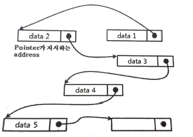
- 순차 편성방법
- 색인순차 편성방법
- 랜덤 편성방법
- 리스트 편성방법
(정답률: 45%)
52. 자료 사전에서 사용되는 기호 중 주석을 의미하는 것은?
- { }
- * *
- =
- +
(정답률: 76%)
53. 중량, 용량, 거리, 크기, 면적 등의 물리적 수치를 직접 코드에 적용시키는 코드 방식은?
- Significant Digit Code
- Sequence Code
- Block Code
- Decimal Code
(정답률: 64%)
54. 코드 설계 순서로 가장 타당한 것은?
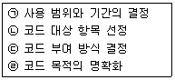
- ㉠ → ㉡ → ㉢ → ㉣
- ㉡ → ㉣ → ㉠ → ㉢
- ㉣ → ㉠ → ㉡ → ㉢
- ㉣ → ㉡ → ㉠ → ㉢
(정답률: 59%)
55. 입력 매체인 종이테이프 또는 펀치 카트 상의 데이터를 자기 디스크에 수록하는 처리는 프로세스의 표준 패턴 중 어디에 해당하는가?
- 변환(conversion)
- 분류(sorting)
- 병합(merge)
- 대조(matching)
(정답률: 55%)
56. 십진 분류 코드에 대한 설명으로 가장 옳지 않은 것은?
- 대량의 자료에 대한 삽입 및 추가가 용이하다.
- 코드의 범위를 무한대로 확장 가능하다.
- 배열이나 집계가 용이하다.
- 기계 처리가 용이하다.
(정답률: 55%)
57. 다음과 같이 코드를 부여할 대상의 이름이나 약호를 코드의 일부분으로 사용하는 코드화 방법은?
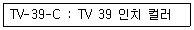
- 순서 코드(Sequence Code)
- 그룹 분류 코드(Group Classification Code)
- 블록 코드(Block Code)
- 연상 코드(Mnemonic Code)
(정답률: 67%)
58. 레코드를 처리할 순서에 맞게 오름차순 또는 내림차순으로 재배치하는 기능은?
- Conversion
- Matching
- Merge
- Sort
(정답률: 68%)
59. 주로 편의점, 백화점 등 유통업체의 계산대에서 사용하는 장치로서 고객이 물품을 구입하게 되면 단말기에서 직접 입력하여 중앙 컴퓨터에 전달되어 현장 상황이 즉시 반영되는 것은?
- MICR
- Plotter
- POS
- SCADA
(정답률: 76%)
60. 시스템 분석가(SA: System Analyst)와 설계자가 갖추어야 할 조건에 대한 설명으로 가장 옳은 것은?
- 분석가는 모방성이 있어야 한다.
- 업계의 동향과 관련법규를 배제하고 독창적인 시스템을 개발해야 한다.
- 컴퓨터기술과 관리기법을 알아야 한다.
- 현장분석 경험은 중요하지 않다.
(정답률: 68%)
4과목: 운영체제
61. Round-Robin 스케줄링(Scheduling) 방식에 대한 설명으로 옳지 않은 것은?
- 할당된 시간(Time Slice) 내에 작업이 끝나지 않으면 대기 큐의 맨 뒤로 그 작업을 배치한다.
- 시간 할당량이 작아질수록 문맥교환 과부하는 상대적으로 낮아진다.
- 시간 할당량이 충분히 크면 FIFO 방식과 비슷하다.
- 적절한 응답시간이 보장되므로 시분할 시스템에 유용하다.
(정답률: 62%)
62. SJF(Shortest Job First) 스케줄링에서 작업 도착 시간과 CPU 사용시간은 다음 표와 같다. 모든 작업들의 평균 대기시간은 얼마인가?
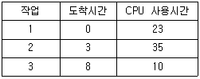
- 15
- 17
- 24
- 25
(정답률: 50%)
63. 실행되어야 할 작업의 크기가 커서 사용자 기억 공간에 수용될 수 없을 때 작업의 모든 부분들이 동시에 주기억 장소에 상주해 있을 필요가 없다. 이때 작업을 분할하여 필요한 부분만 교체하는 방법을 무엇이라 하는가?
- 구역성(locality)
- 압축(compaction)
- 재배치(relocation)
- 오버레이(overlay)
(정답률: 41%)
64. 디렉토리 구조 중 중앙에 마스터 파일 디렉토리가 있고 그 아래에 사용자별로 서로 다른 파일 디렉토리가 있는 계층 구조는?
- 1단계 디렉토리 구조
- 2단계 디렉토리 구조
- 트리 디렉토리 구조
- 비순환 그래프 디렉토리 구조
(정답률: 52%)
65. 가상기억장치에 대한 설명으로 가장 옳지 않은 것은?
- 컴퓨터시스템의 주기억장치 용량보다 더 큰 저장용량을 주소로 지정할 수 있도록 해준다.
- 페이징과 세그먼테이션 기법을 이용하여 가상기억장치를 구현할 수 있다.
- 다중 프로그래밍의 효율을 높일 수 있다.
- 프로세스가 갖는 가상주소 공간상의 연속적인 주소가 실제 기억장치에서도 연속적이어야 한다.
(정답률: 65%)
66. 임계 구역(Critical Section)에 대한 설명으로 가장 옳지 않은 것은?
- 프로세스가 일정 시간 동안 자주 참조하는 페이지의 집합을 임계 구역이라고 한다.
- 임계 구역에서 프로세스 수행은 가능한 빨리 끝내야 한다.
- 임계 구역에서는 프로세스가 무한 루프에 빠지지 않도록 해야 한다.
- 임계 구역에서는 프로세스들이 하나씩 순차적으로 처리되어야 한다.
(정답률: 55%)
67. CPU 스케줄링에서 선점(Preemptive)과 비선점(Non-preemptive) 스케줄링에 대한 설명으로 가장 옳은 것은?
- 선점 스케줄링은 CPU가 어떤 프로세스 실행을 시작하여 그 프로세스가 종료될 때까지 다른 프로세스를 실행할 수 없도록 한 스케줄링이다.
- 비선점 스케줄링은 CPU가 어떤 프로세스 실행 중에 다른 프로세스가 CPU를 요구하면 실행중인 프로세스를 중단하고 요구한 프로세스가 실행될 수 있도록 설계한 스케줄링이다.
- 비선점 스케줄링은 온라인 응용과 일괄처리 응용 모두에 적합한 스케줄링이다.
- 선점 스케줄링은 온라인 응용에 적합한 스케줄링이다.
(정답률: 44%)
68. SCAN 디스크 스케줄링 기법의 특징으로 가장 옳지 않은 것은?
- SSTF(SHORTEST SEEK TIME FIRST)의 개선 기법이다.
- 도착 순서에 따라 실행 순서가 고정된다는 점에서 공평하다.
- 진행방향상의 가장 짧은 거리에 있는 요청을 먼저 수행한다.
- 실린더 지향 전략이다.
(정답률: 53%)
69. 다음 접근제어 리스트에서 “파일1” 이 처리될 수 없는 것은? (단, R=읽기, W=쓰기, P=인쇄, L=공유)
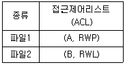
- 읽기
- 쓰기
- 인쇄
- 공유
(정답률: 77%)
70. CPU 스케줄링 알고리즘의 성능을 평가하는 기준으로 가장 거리가 먼 것은?
- 대기시간(waiting time)
- CPU 사용률
- 처리율(throughout)
- 교체(swapping) 시간
(정답률: 58%)
71. 페이지 교체 기법 중 시간 오버헤드를 줄이는 기법으로서 참조 비트(referenced bit)와 변형 비트(modified bit)를 필요로 하는 방법은?
- FIFO
- NRU
- LFU
- NUR
(정답률: 51%)
72. 운영체제의 운용 기법 중 시분할 체제에 대한 설명으로 가장 옳지 않은 것은?
- 일괄 처리 형태에서의 사용자 대기 시간을 줄이기 위한 대화식 처리 형태이다.
- 여러 사용자가 CPU를 공유하고 있지만 마치 자신만이 독점하여 사용하고 있는 것처럼 느끼게 된다.
- 좋은 응답 시간을 제공하기 위해 각 사용자들에게 일정 CPU 시간만큼을 차례로 할당하는 SJF 스케줄링을 사용한다.
- 단위 작업 시간을 Time Slice 라고 한다.
(정답률: 51%)
73. 다중 처리기(Multi-Processor) 운영체제 구조 중 주종(Master/Slave) 처리기에 대한 설명으로 가장 옳지 않은 것은?
- 하나의 프로세스를 주(Master)프로세서로 지정하고, 나머지들은 종(Slave)프로세서로 지정한다.
- 운영체제의 수행은 주(Master)프로세서가 담당한다.
- 주(Master)프로세서와 종(Slave)프로세서가 동시에 입출력을 수행하므로 대칭 구조를 갖는다.
- 주(Master)프로세서가 고장나면 전체 시스템이 다운된다.
(정답률: 71%)
74. 운영체제의 설계 목표가 아닌 것은?
- 빠른 응답시간
- 처리량 향상
- 경과 시간 증가
- 폭 넓은 이식성
(정답률: 75%)
75. 스풀링(Spooling)에 대한 설명으로 가장 옳지 않은 것은?
- CPU와 입ㆍ출력장치를 아주 높은 효율로 작업할 수 있도록 하는 다중 프로그래밍의 운영 방식이라고 볼 수 있다.
- 많은 작업의 입ㆍ출력과 계산을 중복하여 수행할 수 있다.
- 용량이 크고 빠른 디스크를 이용하여 각 사용자의 입ㆍ출력을 효과적으로 처리하는 기법이다.
- 입ㆍ출력이 일어나는 동안 그 데이터를 주기억장치에 저장하여 처리한다.
(정답률: 46%)
76. 라운드로빈(Round-Robin) 방식으로 스케줄링 할 경우, 입력된 작업이 다음과 같고 각 작업의 CPU 할당 시간이 3시간일 때, CPU의 사용 순서가 가장 옳게 나열된 것은?(오류 신고가 접수된 문제입니다. 반드시 정답과 해설을 확인하시기 바랍니다.)
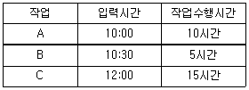
- A A A A B B C C C C C
- A A A A C C C C C B B
- A B C A B C A C A C C
- A B B C A A A C C C C
(정답률: 61%)
77. UNIX에서 명령어 해석기로 명령어를 읽어서 실행하는 것은?
- kernel
- i-node
- shell
- PCB
(정답률: 63%)
78. 3 페이지가 들어갈 수 있는 기억장치에서 다음과 같은 순서로 페이지가 참조될 때 FIFO 기법을 사용하면 페이지 부재(page fault)는 몇 번 일어나는가? (단, 현재 기억장치는 모두 비어 있다고 가정한다.)
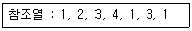
- 4
- 5
- 6
- 8
(정답률: 53%)
79. 교착상태(Deadlock)의 필요조건에 해당하지 않는 것은?
- mutual exclusion
- circular wait
- preemption
- hold and wait
(정답률: 62%)
80. 페이징 시스템의 페이지 관리 전략 중 “근래에 쓰이지 않은 페이지들은 가까운 미래에도 쓰이지 않을 가능성이 높다.” 라는 이론에 근거한 교체 전략은?
- LFU(Least Frequently Used) 페이지 교체
- FIFO 페이지 교체
- NUR(Not Used Recently) 페이지 교체
- 무작위(random) 페이지 교체
(정답률: 63%)
5과목: 정보통신개론
81. 회선교환(Circuit Switching)방식의 특징에 해당하는 것은?
- 고정된 대역폭 전송방식이다.
- 축적 후 전송방식에 해당한다.
- 패킷을 이용한 전송방식이다.
- 전송에 실패한 패킷에 대해서 재전송 요구가 가능하다.
(정답률: 47%)
82. 4진 PSK 변조 방식에서 변조속도가 4800[Baud] 일 때 데이터의 전송속도[bps]는?
- 2400
- 4800
- 9600
- 12800
(정답률: 61%)
83. LAN(Local Area Network)에서 CSMA/CD 방식에 대한 설명 중 틀린 것은?
- IEEE 802.3의 표준규약이다.
- 버스형에 일반적으로 이용된다.
- 트래픽양이 증가할수록 채널 이용 효율이 상승한다.
- 다중충돌접근기법이라고도 한다.
(정답률: 59%)
84. HDLC 프레임의 헤더에서 프레임을 송ㆍ수신하는 스테이션을 구별하기 위해 사용되는 스테이션 식별자 필드는?
- 주소 필드
- 프레임 검사 순서
- 정보 필드
- 플래그
(정답률: 47%)
85. 물리적 하드웨어 주소인 이더넷 주소를 IP 주소로 변환하는 프로토콜은?
- ARP
- RARP
- HDLC
- PPP
(정답률: 39%)
86. LAN의 네트워크 형태(Topology)에 따른 분류에 속하지 않는 것은?
- 스타형
- 버스형
- 링형
- 교환형
(정답률: 74%)
87. LAN의 한 종류인 100Base-T 네트워크에서 사용되는 전송매체는?
- Coaxial cable
- Optical cable
- UTP cable
- Microwave cable
(정답률: 56%)
88. HDLC(High-level Data Link Control) 동작모드에 해당하지 않는 것은?
- 정규 응답 모드(NRM)
- 비동기 응답 모드(ARM)
- 비동기 균형 모드(ABM)
- 동기 균형 모드(SBM)
(정답률: 55%)
89. TCP 프로토콜의 기능으로 틀린 것은?
- 어플리케이션 제어
- 연결 수립, 종료
- 데이터 전송
- 흐름 제어
(정답률: 57%)
90. 4[KHz]의 음성신호를 재생시키기 위한 표본화 주파수의 주기는?
- 125[µs]
- 165[µs]
- 200[µs]
- 250[µs]
(정답률: 45%)
91. 데이터 프레임을 연속적으로 전송 중 NAK를 수신하면 오류가 발생한 프레임 이후에 전송된 모든 데이터 프레임을 재전송하는 오류제어 방식은?
- Go-back-N ARQ
- Selective-Repeat ARQ
- Stop-and-Wait ARQ
- Forward Error Connection
(정답률: 69%)
92. OSI 7계층에서 암호화, 코드변환, 텍스트 압축 등을 수행하는 계층은?
- 응용 계층
- 표현 계층
- 물리 계층
- 데이터링크 계층
(정답률: 55%)
93. 통신 프로토콜의 기본 구성요소가 아닌 것은?
- 구문
- 문법
- 의미
- 타이밍
(정답률: 48%)
94. 데이터 링크(data-link) 계층 프로토콜이 아닌 것은?
- HDLC
- BSC
- LAP-B
- FTP
(정답률: 49%)
95. 반송파의 위상과 진폭을 동시에 변조하는 방식은?
- ASK
- PSK
- FSK
- QAM
(정답률: 65%)
96. HDLC 프레임 중 링크의 설정과 해제, 오류 회복을 위해 주로 사용되는 것은?
- 정보 프레임(Information Frame)
- 무번호 프레임(Unnumbered Frame)
- 감독 프레임(Supervisory Frame)
- 복구 프레임(Recovery Frame)
(정답률: 38%)
97. 주파수분할다중화(FDM) 방식에서 보호대역이 필요한 이유는?
- 신호의 세기를 크게 하기 위하여
- 주파수 대역폭을 넓히기 위하여
- 채널의 신호를 혼합하기 위하여
- 채널간의 간섭을 막기 위하여
(정답률: 68%)
98. 아날로그 신호를 디지털 신호로 변환하는 PCM 부호화 단계로 옳은 것은?
- 양자화 → 부호화 → 표본화
- 표본화 → 양자화 → 부호화
- 양자화 → 표본화 → 부호화
- 표본화 → 부호화 → 양자화
(정답률: 72%)
99. 나이퀴스트 채널용량 산출 공식(C)으로 옳은 것은? (단, 잡음이 없는 채널로 가정, S/N : 신호대잡음비, M : 진수, B : 대역폭)
- C=Blog2(S/N)(bps)
- C=Blog2(M+1)(bps)
- C=2Blog2(10+S/N)(bps)
- C=2Blog2M(bps)
(정답률: 39%)
100. 통신속도가 50[Baud]일 때 최단부호펄스의 시간[sec]은?
- 2
- 1
- 0.5
- 0.02
(정답률: 59%)